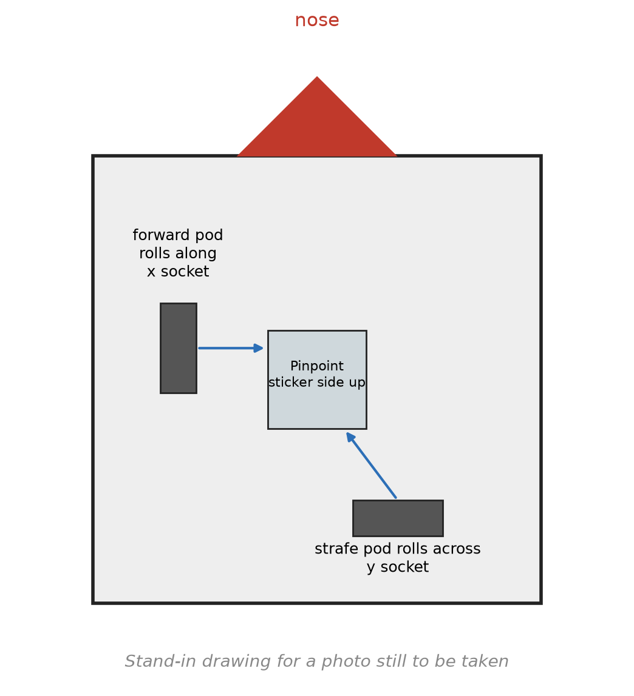

Mount the Pinpoint and plug it in¶
What you will have when this is done¶
The Pinpoint is bolted on, its two pods are in the right sockets, and the Control Hub finds it when
you press INIT. The robot does not yet know how far the pods sit from its middle. That is
task.autotune, and this page is what it needs first.
Before you start¶
L6 is finished. From L6 on the follower holds the drivetrain, and the follower is what builds the Pinpoint.
The robot, the two odometry pods, and whatever driver the robot’s own screws take.
The I2C cable the Pinpoint came with.

The Pinpoint on the robot from above, with the forward pod and the strafe pod drawn at right angles to each other, each labelled with the socket it plugs into, and the sticker side marked facing up.¶
The steps¶
Step 1: put one pod along the robot and one across it¶
The Pinpoint counts two wheels that nothing drives. One rolls along the length of the chassis, and that one is the forward pod. The other rolls across it, and that one is the strafe pod.
Both have to touch the floor the whole time, and neither may be able to lift. A pod that skips loses count, and nothing downstream can tell that it did.
Then plug each one into its own socket. The forward pod goes in the x socket. The strafe pod goes in the y socket.
You’ll know it worked when both pod wheels move as you push the robot forward. The forward pod turns. The strafe pod drags sideways.
If it didn’t, and a pod wheel does not turn at all, it is not reaching the floor. Most mounts have a slot for that.
Step 2: use an I2C port that is not port 0¶
The Pinpoint talks to the Control Hub over I2C, and it has to be on a port other than port 0. Port 0 already has the Control Hub’s own IMU on it.
While you are in there, the sticker side of the Pinpoint, the side the ports are on, faces up.
Then open the Robot Configuration on the Driver Station and give it the name pinpoint, spelled
exactly that way. That is the name the code asks for:
c.name.set("pinpoint");
You’ll know it worked when L6 Follower Wheels gets through INIT without an error. Building the
follower is what looks the Pinpoint up, so INIT finishing means it was found.
If it didn’t, and the Driver Station shows this, the name in the configuration is not the name in the code:
Unable to find a hardware device with name "pinpoint" and type GoBildaPinpointDriver
Step 3: hold the robot still while it inits¶
Pressing INIT builds the follower. The follower builds the Pinpoint. The Pinpoint then recalibrates its own gyro, which takes about a quarter of a second. The robot has to sit still for it.
So press INIT with the robot on the floor and your hands off it. If somebody was carrying it, wait until it is down.
You’ll know it worked when the heading holds steady. Leave the robot alone after INIT and watch
heading in Panels, or drive a slow square and see whether the nose angle comes back to where it
started.
If it didn’t, and the heading crawls one way while the robot sits still, INIT happened while the robot was moving. Press STOP and INIT again without touching it.
Step 4: let AutoTune measure the pods¶
Four numbers are still missing: which way each pod counts, and how far each one sits from the middle
of the robot. They are in Constants.java, in localizerConfig, and they were put there by
AutoTune.
What they mean, from the goBILDA driver’s own notes: the x offset is how far sideways the forward pod is from the point the robot turns about, and left counts up. The y offset is how far forward the strafe pod is from that point, and forward counts up. This robot’s are about 1.06 in and about 3.36 in.
Running the procedure that measures them is task.autotune. It pushes the robot forward, then to
the left, then spins it 180 degrees, and prints a PinpointConfig to paste in.
You’ll know it worked when AutoTune’s localization test agrees with the robot. The pose starts at (0, 0). Driving forward raises x. Strafing left raises y.
If it didn’t, and x and y swap over, the two pods are in each other’s sockets. Step 1 is where that gets fixed, and no amount of tuning works around it.
Where this page comes from
Not from a robot. The three rules in steps 1 and 2 are Pedro’s, from its Pinpoint page, read on 2026-09-28, and no Pinpoint was wired each wrong way to see what each mistake looks like.
What is read from the code rather than recalled: the missing-device message is the one
HardwareMap.get throws in the SDK; the recalibration at INIT is PinpointConfig’s default
resetMode, which PinpointLocalizer’s constructor acts on; the stationary robot and the quarter
second are the goBILDA driver’s own javadoc; and the two offsets are this robot’s, from
Constants.localizerConfig.
What you just did¶
Every lesson from L8 on believes the Pinpoint. L8 puts a second localizer beside it, and shows the drive encoders drifting away from it over a run. L17 measures the robot against it. A pod in the wrong socket makes all of that quietly wrong instead of loudly broken. That is why it gets a page of its own.
The Pinpoint also explains one thing. The follower needs nothing from the drive motors to know where the robot is. Two wheels that nothing drives cannot be scrubbed sideways by a mecanum roller, and cannot be spun by a wheel that slips.
Where next¶
task.autotunemeasures the pods and fills in the four numbers. It is not written yet.task.l8 compares the Pinpoint against the drive encoders and logs both.